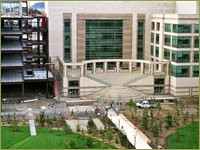

UCSF Mission Bay campus, 2003. Photo by Majed.
2010
Opening of the Smith Cardiovascular Research Building, the new headquarters of the UCSF Cardiovascular Research Institute at Mission Bay.
2010
David Julius, PhD receives the 2010 Shaw Prize in Life Sciences and Medicine for his groundbreaking work on the sensation of touch.
2010
UCSF Nobel laureate Stanley B. Prusiner, MD, Professor of Neurology and director of the Institute for Neurodegenerative Diseases, receives the National Medal of Science for his discovery of and ongoing research on prions.
2010
UCSF breaks ground on the UCSF Medical Center at Mission Bay, a state-of-the-art and sustainable medical center that promises to transform care for women, children, and cancer patients.
2010
San Francisco philanthropists Marc and Lynne Benioff announce the $100 million gift to help build a new home for UCSF Children's Hospital at Mission Bay. This contribution gave the children’s hospital its new name: UCSF Benioff Children's Hospital.
2011
UCSF Medical Center opens robotic pharmacy believed to be the nation's most comprehensive facility using robotic technology and electronics to prepare and track medications with the goal of improving patient safety.
2011
UCSF Chancellor Susan Desmond-Hellmann co-chairs a National Academy of Sciences Committee that recommended the creation of an extensive data network to revolutionize medical discovery, diagnosis and treatment, an emerging field called precision medicine.
2011
Neil Risch and Pui-Yan Kwok lead effort to performed whole-genome genotyping of the DNA of 100,000 Kaiser Permanente members who agreed to take part in the nation’s largest and most diverse genomics project.
2011
Mount Zion celebrates 100 years since its founding.
2011
UCSF opens the new Teaching and Learning Center, one of the nation's first inter-professional, team-based simulation learning centers, as part of the campus' ongoing efforts to foster collaboration and innovation among the health professions.
2011
UCSF celebrates the grand opening of the Eli and Edythe Broad Center of Regeneration Medicine and Stem Cell Research at UCSF, on the Parnassus campus. This unique structure serves as headquarters for a program that will continue to extend across all UCSF departments. The building is located near UCSF Medical Center, symbolizing UCSF’s long-term goal of translating basic science research findings into clinical treatments.
2012
Chief Nursing Officer Sheila Antrum and team at UCSF Medical Center and UCSF Benioff Children’s Hospital achieve Magnet recognition from the American Nurses Credentialing Center.
2012
Shinya Yamanaka, a senior investigator at the Gladstone Institutes — which is affiliated with UCSF — wins the Nobel Prize in Medicine for his discovery of how to transform ordinary adult skin cells into cells that, like embryonic stem cells, are capable of developing into any cell in the human body.
2012
UCSF becomes first UC campus to partner with Coursera to offer online courses.
2012
UCSF Medical Center takes a major step in advancing patient-centered care though the successful implementation of APeX, one of the most comprehensive electronic health records systems in the U.S.
2012
UCSF opens a new Anatomy Learning Center, a state-of-the-art, technology-enabled, student-centered space for inerprofessional education and training located on the Parnassus campus.
2012
Ron Vale wins the Albert Lasker Basic Medical Research Award for work beginning more than three decades ago, that has helped illuminate several critical aspects of life — how the heart beats and how cells transport material around internally.
2013
UCSF celebrates groundbreaking for the new Global Health & Clinical Sciences Building, or Mission Hall at Mission Bay, which will bring together all the faculty, staff, and students involved in the University’s global health programs.
2013
UCSF convenes more than 170 of the world’s foremost thinkers, creators, and innovators for the first-ever OME Precision Medicine Summit to identify new approaches to make medicine more predictive, preventive, and precise.
2013
UCSF names Michael Blum director of the newly created Center for Digital Health Innovation to focus on transforming health care delivery and discovery in an era of individualized precision medicine.
2014
UCSF Benioff Children’s Hospital and Children’s Hospital & Research Center Oakland affiliate, building on the hospitals’ mutual commitment to provide outstanding care to children in local communities, and advance medical discovery and treatment for the world.
2014
UCSF celebrates its 150th anniversary with a series of events beginning in April with Founders Day and continuing through May 2015.
Leadership
UCSF Chancellors: - Susan Desmond-Hellmann (2009-2014)
- Sam Hawgood (2014-present)
Deans (Dentistry):
-
John Featherstone (2007-present)
Deans (Graduate Division)
- Joseph Castro, Ph.D., Interim (2011-2012)
- Elizabeth Watkins, Ph.D. (2012-present)
Deans (Medicine):
- Samuel Hawgood, Interim (2007-2009); Dean (2009-present)
Deans (Nursing):
- Sally Rankin (Interim 2010-2011)
- David Vlahov (2011-present)
Deans (Pharmacy):
- Mary Anne Koda-Kimble (1998-2012)
- B. Joseph Guglielmo, Jr., Interim (2012-2013); Dean (2013-present)
Directors (Medical Center)
- Mark R. Laret (2001-Present)
{% include footer.html %}